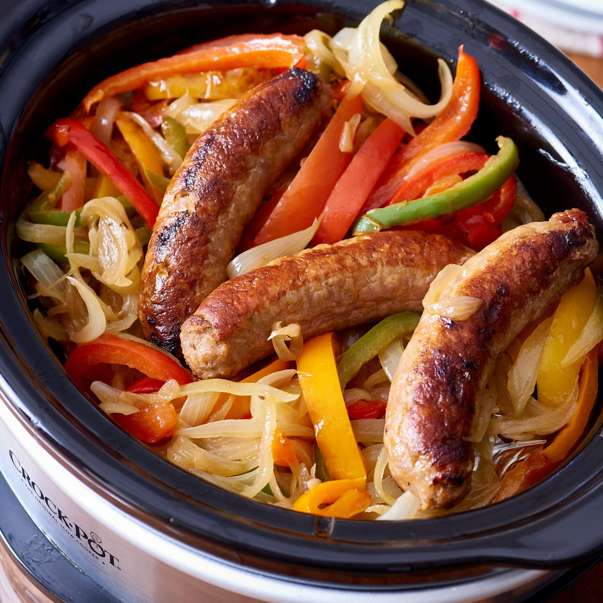

Shavocado! the legend

This is the ultimate drunken meal, it even includes beer!
Ingredients
- Beer (obviously)
- 3 sausages, your choice of flavor or type
- 1 each, red green and yellow or orange pepper
- one large onion
- 4-5 large potatoes
- Milk
- butter
- salt, pepper, old bay, smoked paprika
Steps
- on medium high heat, sear the sausages and set aside
- reduce heat to medium, add peppers and onions
-
once softened up half way, slowly add beer and scrape up the brown bits
from
the bottom of the pan add back sausages and cook for 15-20 mins
depending on preferance
- serve over mashed potatoes using the liquid as a gravy